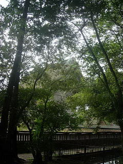
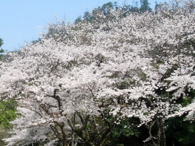
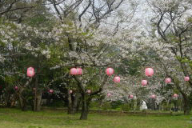
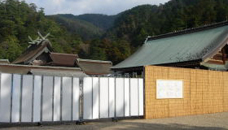

出雲大社の初詣
2009/1/3
1/3なので大社は吉兆さんがあり、お祭りを色々やってて賑やかでした。
参拝の人は元日の方が断然多いですが、3日の方がお祭り気分がより味わえて楽しいですね。

大社本殿の後ろからの写真です。この先の本殿の北西方向は工事中で進入禁止になっていました。なのでぐるっと本殿の回りを一周する事は出来なくなってました。
残念ですね。こんな状態がしばらく続くって事はきっと観光客の人数が今年から数年は減るんでしょうね。
島根県出雲市大社町杵築東195
2009/1/3
1/3なので大社は吉兆さんがあり、お祭りを色々やってて賑やかでした。
参拝の人は元日の方が断然多いですが、3日の方がお祭り気分がより味わえて楽しいですね。

大社本殿の後ろからの写真です。この先の本殿の北西方向は工事中で進入禁止になっていました。なのでぐるっと本殿の回りを一周する事は出来なくなってました。
残念ですね。こんな状態がしばらく続くって事はきっと観光客の人数が今年から数年は減るんでしょうね。
2008/4/6
桜が満開時の日曜日が晴れて、いい花見ができました。
風が吹いたら花びらが散って、綺麗でした。

2008/1/2
3時過ぎに時間があったので出かけたんですが、やっぱり道が渋滞してました。
といっても渋滞区間はそんなに長くなかったですし、歴史博物館の駐車場が空いていたので、長距離を歩かないですみました。
御神酒を頂いたんですが、杯って持って帰るんですね。
前にいた人が「どちらに返せば？」って質問されたら「出来ればお持ち帰りになって下さい」って言われてました。
今はそうなんですね。ちゃんと持ち帰りました。
2007/4/8
桜の花見に行きました。大社は駐車場の心配がいらないですし、宴会してる人がわりと少ないので行きやすいですね。あと通路も広いし、植わっているエリアが広いので、人が混まないのもいいです。
のんびり広い境内を歩きながら桜の花見をしました。
個体差はありますが、満開はもう終わって、花がだいぶ散った木が多くありました。
周りの桜よりも大社の木は開花が早いみたいなので、来年はちょっと早めに行こうと思います。

2007/2/12
出雲大社に行ったら、本殿改修工事のための工事がもう始まってました。
まだ本殿はそのままありますけど、どんなふうに工事するんでしょうね？

大社周辺にオフィスビルが建つと平日でも賑やかでいいのにな。